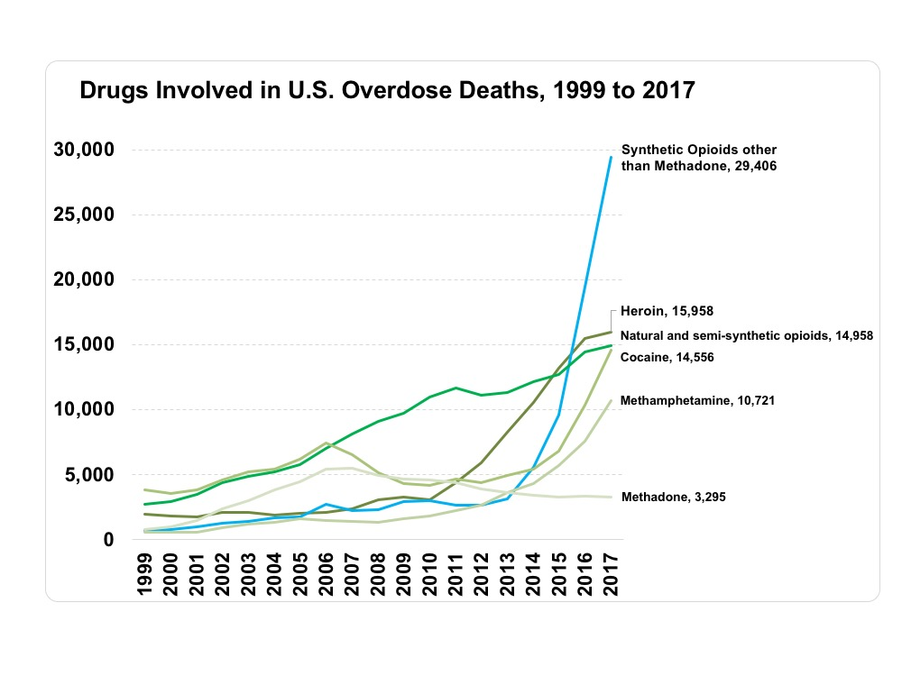

Topic Overview
The epidemic of drug abuse has come into the national spotlight as more and more people are dying from opioid overdoses. The numbers involved are staggering, and as american's perspective on drugs shifts, so is the shift in what the issue is about drugs. For a long time drug use has been considered to be a personal issue, but as the opioid deaths continue to rise, theres began a realization that this is a social issue. That this stems from a problem in our society is reflected in how different areas are affected by this issue.
The Rise of Overdoses
The Goal
Hopefully these visualizations and analysis will enable both voters to understand the depth and scope of this issue, and policy makers to see how much this affects them. If successful this could nudge people to doing right by the people suffering from an epidemic of painkiller overprescription.
Another reason this has become so much more important, is that during the presidential elections the overdose epidemic was constantly talked about and now it feels like its being glossed over. Maybe because it's an uncomfortable topic. It also could be that there's a lot of lobbying money pouring in from the drug companies which supply painkillers, a side effect of how long they've achieved a dominance over US health care systems, based off of lies like opioids are non addictive. (an actual claim by oxycotin used in their advertising)